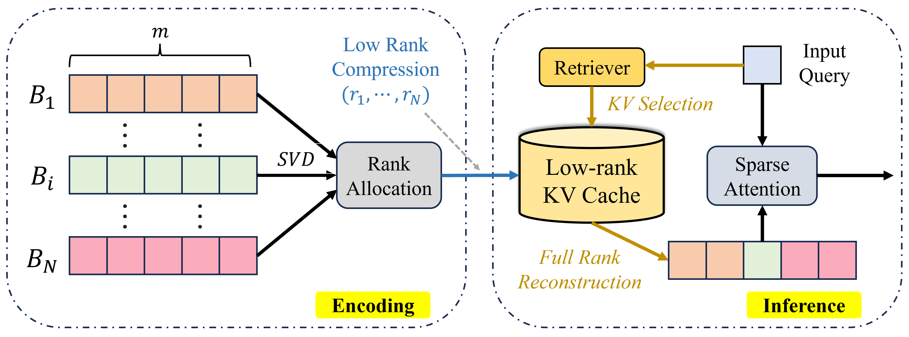

MILO: Efficient Many-shot In-Context Learning with Block-wise Low-rank Compression — a thousand demos repeat themselves: SVD the demo cache block by block, give rank to the blocks that need it— 예시 천 개는 서로를 되풀이한다: 예시 캐시를 블록마다 SVD로 줄이고, 랭크는 필요한 블록에 몰아준다
👥 Youpeng Zhao, Tian Tan, Liqian Peng, Jun Wang, Alec Go (corresponding: Youpeng Zhao, Tian Tan)(교신: Youpeng Zhao, Tian Tan)🏛 Google · UCF🗓 2026-09-24📄 arXiv:2609.29913
⚡ TL;DR
Many-shot ICL (in-context learning with hundreds to thousands of worked examples in the prompt) turns memory into the bottleneck: the pre-encoded KV cache of the demo pool grows with every example. MILO splits that cache into blocks of several examples each, truncates each block's K and V with SVD, and hands out a global rank budget greedily by each block's spectrum. At query time only the retrieved blocks are rebuilt, in a fused kernel. On Qwen2.5-7B at 512 shots it halves KV storage and keeps 0.725 average accuracy (Full Cache 0.753, Palu 0.700). With CPU offload on one L4 GPU, throughput is up to 3.2× the full-cache setup.
Many-shot ICL(프롬프트에 풀이 예시를 수백~수천 개 넣는 인컨텍스트 학습)에서는 메모리가 병목이 된다. 미리 인코딩해 둔 예시 풀의 KV 캐시가 예시마다 커지기 때문이다. MILO는 이 캐시를 예시 여러 개씩 묶은 블록으로 나누고, 블록마다 K와 V를 SVD(특이값 분해)로 잘라 내며, 전체 랭크 예산은 각 블록의 스펙트럼을 보고 탐욕적으로 나눠 준다. 질의가 오면 검색된 블록만 합친(fused) 커널로 복원한다. Qwen2.5-7B, 512샷에서 KV 저장량을 절반으로 줄이면서 평균 정확도 0.725를 지킨다(Full Cache 0.753, Palu 0.700). L4 GPU 한 장에서 CPU 오프로드로 돌리면 처리량이 전체 캐시 설정의 최대 3.2배다.
Why it matters왜 중요한가
Long context made "just put more examples in the prompt" a real alternative to fine-tuning — and made the demo cache a storage problem.
긴 컨텍스트 덕에 "프롬프트에 예시를 더 넣기"가 파인튜닝의 진짜 대안이 됐다. 그 대가로 예시 캐시가 저장 문제가 됐다.
Systems like DBSA and Adapshot already pre-encode the demo pool once and reuse its KV cache across queries, attacking compute. Nobody had attacked the storage: the paper cites 11.1 GB extra for 90k examples on an 8B model. The demo cache is an unusual target for compression. It is static, built offline and shared by every query, so an SVD can be paid once. And it is repetitive by nature, since demos share a format and a label space. Figure 1 in the paper shows that the 99%-energy effective rank of the cache actually falls as shots are added, and that pre-RoPE keys are far more low-rank than values. For this archive, it applies the low-rank thread (SVD truncation plus rank allocation) to a new kind of cache.
DBSA나 Adapshot 같은 시스템은 이미 예시 풀을 한 번 미리 인코딩하고 그 KV 캐시를 질의마다 재사용해 계산을 줄인다. 그런데 저장을 공략한 사람은 없었다. 논문은 8B 모델에서 예시 9만 개에 11.1 GB가 더 든다고 인용한다. 예시 캐시는 압축 대상으로 특이하다. 정적이고, 오프라인에서 만들어지고, 모든 질의가 공유하니 SVD 비용을 한 번만 내면 된다. 게다가 본래 반복적이다. 예시들이 형식과 레이블 공간을 공유하기 때문이다. 논문의 Figure 1은 샷을 늘릴수록 캐시의 99% 에너지 유효 랭크(에너지 99%를 담는 데 필요한 특이값 개수)가 오히려 줄고, RoPE 적용 전 키가 값보다 훨씬 저랭크임을 보여 준다. 이 아카이브에선 저랭크 흐름(SVD 절단 + 랭크 배분)을 새로운 종류의 캐시에 적용한 논문이다.

Figure 3. Left, encoding (offline): the many-shot KV cache is cut into N blocks of m examples; SVD of each block feeds a rank allocator, and each block is stored at its own rank ri. Right, inference: a retriever (BM25) picks the blocks relevant to the query, the selected low-rank blocks are rebuilt to full rank in parallel, and sparse attention runs over them with the query.Figure 3. 왼쪽은 인코딩(오프라인)이다. many-shot KV 캐시를 예시 m개짜리 블록 N개로 자르고, 블록별 SVD 결과를 랭크 배분기에 넣어 블록마다 자기 랭크 ri로 저장한다. 오른쪽은 추론이다. 검색기(BM25)가 질의에 맞는 블록을 고르고, 고른 저랭크 블록을 병렬로 원래 랭크로 복원한 뒤, 질의와 함께 희소 어텐션을 돌린다.
Source: original figure출처: 논문 원본 그림 · arXiv:2609.29913
By the numbers핵심 숫자
2×
KV storage reduction at the 50% rank budget used in all main results모든 주요 결과에 쓴 50% 랭크 예산에서의 KV 저장량 감소
0.725 / 0.753
avg accuracy vs Full Cache, Qwen2.5-7B, 512 shots (Palu 0.700, ASVD 0.680)평균 정확도 대 Full Cache, Qwen2.5-7B, 512샷 (Palu 0.700, ASVD 0.680)
3.2×
throughput vs full-cache KV offloading, 7B at 512 shots, one L4 GPU전체 캐시 KV 오프로드 대비 처리량, 7B·512샷, L4 GPU 한 장
+37% / +60%
best-case throughput over Palu / ASVDPalu / ASVD 대비 최대 처리량 향상
5.3×
KV reduction stacked with KIVI 2-bit, at 0.701 avg accuracy (7B)KIVI 2비트와 겹쳤을 때의 KV 감소, 평균 정확도 0.701 (7B)
3.7×
reconstruction speedup: fused Triton + CUDA streams + CUDA Graphs vs PyTorch복원 속도 향상: fused Triton + CUDA 스트림 + CUDA Graph 대 PyTorch
Same budget, better fidelity같은 예산, 더 높은 충실도
Table 1 (Qwen2.5-7B rows). Accuracy on six many-shot ICL tasks, 512 shots, all compressed methods at the same 50% rank budget. Green = best compressed result. On Qwen2.5-3B the averages are Full 0.677 · ASVD 0.605 · Palu 0.637 · MILO 0.647.
Table 1 (Qwen2.5-7B 행). many-shot ICL 과제 6개의 정확도, 512샷, 압축 방법은 모두 같은 50% 랭크 예산. 초록 = 압축 방법 중 최고. Qwen2.5-3B 평균은 Full 0.677 · ASVD 0.605 · Palu 0.637 · MILO 0.647.
Method
BANKING77
CLINIC150
TREC
NLU
MATHQA
SVAMP
Avg.
Full Cache
0.812
0.808
0.932
0.860
0.420
0.684
0.753
ASVD (per-example)(예시 단위)
0.785
0.742
0.837
0.815
0.311
0.594
0.680
Palu (global)(전역)
0.802
0.763
0.861
0.824
0.356
0.592
0.700
MILO (block)(블록)
0.804
0.794
0.894
0.834
0.394
0.632
0.725
In one diagram한 장의 그림
1 · block the demo cache1 · 예시 캐시를 블록으로
Group m examples per block (B tokens); factor K and V of each block separately, since keys compress far better than values블록마다 예시 m개(B 토큰)를 묶는다. 키가 값보다 훨씬 잘 압축되므로 블록의 K와 V를 따로 분해한다
Ki ≈ AiΣiBi⊤ · 2Bd → (rki+rvi)(B+d)
→
2 · spend the rank budget greedily2 · 랭크 예산을 탐욕적으로 배분
Start every block at rmin; give each next rank unit to the block with the largest marginal "spectral information" gain, up to Rtot모든 블록을 rmin에서 시작해, 다음 랭크 한 단위를 "스펙트럼 정보" 증가분이 가장 큰 블록에 준다. Rtot까지 반복
ΔHi,r = log(1 + σ2i,r+1/ε2) · Σri ≤ Rtot
→
3 · retrieve, rebuild, attend3 · 검색 → 복원 → 어텐션
BM25 picks the blocks for this query; only their factors move from CPU memory to the GPU and are rebuilt in one fused kernel before sparse attentionBM25가 이 질의에 맞는 블록을 고른다. 그 블록의 인수만 CPU 메모리에서 GPU로 옮겨, 합친 커널 하나로 복원한 뒤 희소 어텐션에 넣는다
O = Attn(Q, [K̂k1…], [V̂k1…])
The saving is paid for offline and collected on the PCIe bus. SVD and rank allocation run once at encoding time, off the critical path. At serving time the cache lives in CPU memory (the FlexGen-style offload setup), so fewer bytes per retrieved block means less transfer time. Reconstruction returns to full rank before attention, so the GPU still attends over full-size K/V.
절감 비용은 오프라인에서 내고, 이득은 PCIe 버스에서 거둔다. SVD와 랭크 배분은 인코딩 때 한 번만 돌아서 응답 경로에 없다. 서빙 때 캐시는 CPU 메모리에 있으므로(FlexGen식 오프로드 설정), 검색된 블록당 바이트가 줄면 전송 시간이 준다. 복원은 어텐션 전에 원래 랭크로 되돌리므로, GPU는 여전히 원래 크기의 K/V에 어텐션한다.
The idea in three pieces아이디어를 셋으로 쪼개면
observation
More shots, more redundancy샷이 늘수록 중복도 는다
Three findings on Qwen2.5 with MathQA demos (Figures 1–2). Keys are much more low-rank than values. The 99%-energy effective rank drops as shots grow (7B, read off the plot: keys ≈124 → ≈24, values ≈467 → ≈187 from 4 to 256 shots), so adding shots adds storage but adds even more redundancy. And the low-rank behavior differs from block to block and from layer to layer. The first two justify SVD; the third justifies non-uniform ranks.
MathQA 예시로 Qwen2.5를 본 세 가지 관찰이다(Figure 1–2). 키가 값보다 훨씬 저랭크다. 샷이 늘수록 99% 에너지 유효 랭크가 줄어든다(7B, 그래프에서 읽은 값: 4→256샷에서 키 ≈124 → ≈24, 값 ≈467 → ≈187). 그래서 샷을 늘리면 저장량도 늘지만 중복은 그보다 더 는다. 그리고 저랭크 정도가 블록마다, 층마다 다르다. 앞의 둘이 SVD를 정당화하고, 셋째가 균일하지 않은 랭크를 정당화한다.
granularity
Block: between global and per-example블록: 전역과 예시 단위의 사이
Compress the whole context globally (Palu-style) and you lose fine detail and must rebuild everything, even though only a few demos are retrieved per query. Compress each example alone (ASVD-style) and you miss cross-example redundancy while errors pile up. A block of several examples gets both the redundancy and retrieval-sized units. Figure 5b finds about 32 examples per block best for both accuracy and speed.
문맥 전체를 전역으로 압축하면(Palu식) 세부가 사라지고, 질의마다 예시 몇 개만 검색하는데도 전부 복원해야 한다. 예시 하나씩 압축하면(ASVD식) 예시 간 중복을 놓치고 오차가 쌓인다. 예시 여러 개짜리 블록은 중복도 잡고 검색 단위 크기도 맞춘다. Figure 5b에선 블록당 약 32개 예시가 정확도와 속도 모두에서 가장 좋다.
allocation
Rank goes where the spectrum is slow스펙트럼이 느리게 줄어드는 곳에 랭크를
Rank selection becomes a budgeted maximization of ΣiHi(ri), with bounds rmin…rmax. Because each gain term depends on one singular value, greedy marginal allocation solves it exactly. Blocks whose spectra decay slowly (information-dense, e.g. reasoning-heavy demos) get more rank; redundant blocks are squeezed. Figure 5d: it beats uniform and random allocation, though the gap shrinks as shots grow.
랭크 선택을 rmin…rmax 범위 안에서 ΣiHi(ri)를 예산 아래 최대화하는 문제로 푼다. 이득 항 하나가 특이값 하나에만 달려 있어서, 증가분 기준 탐욕 배분이 정확한 해를 준다. 스펙트럼이 천천히 줄어드는(정보가 빽빽한, 예컨대 추론이 많은 예시) 블록이 랭크를 더 받고, 중복된 블록은 압축된다. Figure 5d: 균일·무작위 배분보다 낫지만, 샷이 늘수록 차이가 줄어든다.
How it works어떻게 작동하나
Pre-encode once.한 번 미리 인코딩한다. Run the demo pool through the model and chunk its per-head K/V into N blocks of m examples. 예시 풀을 모델에 통과시키고, 헤드별 K/V를 예시 m개짜리 블록 N개로 자른다.
Factor and allocate.분해하고 배분한다. SVD each block's K and V; greedily assign ranks under Rtot; store the truncated A, Σ, B factors (in CPU memory under offload). 블록마다 K와 V를 SVD하고, Rtot 아래에서 랭크를 탐욕적으로 배정한 뒤, 잘라 낸 A, Σ, B 인수를 저장한다(오프로드 시 CPU 메모리).
Retrieve.검색한다. A BM25 retriever picks the blocks relevant to the incoming query; only those factors are fetched. 들어온 질의에 맞는 블록을 BM25 검색기가 고르고, 그 인수만 가져온다.
Rebuild in one pass.한 번에 복원한다. A fused Triton kernel does load → Σ-scaling → A·Σ·B⊤ in on-chip memory and writes straight into the attention buffer; independent blocks run on separate CUDA streams, and CUDA Graphs replay repeated paths. 합친 Triton 커널이 불러오기 → Σ 곱하기 → A·Σ·B⊤를 칩 내부 메모리에서 끝내고 어텐션 버퍼에 바로 쓴다. 서로 독립인 블록은 별도 CUDA 스트림에서 돌고, 반복되는 경로는 CUDA Graph로 재생한다.
Attend.어텐션한다. Sparse attention runs over the query plus the rebuilt blocks to generate the answer. 질의와 복원된 블록 위에서 희소 어텐션을 돌려 답을 생성한다.
What to take away그래서, 가져갈 것
🚀
A static, shared cache changes the economics of KV compression. When the prefix is reused by every query (demo pools, system prompts, document stores, or a KV "library" that agents relay), you can afford an exact SVD and careful rank allocation offline. Online eviction methods cannot do that.
정적이고 공유되는 캐시는 KV 압축의 셈법을 바꾼다. 접두부를 모든 질의가 재사용한다면(예시 풀, 시스템 프롬프트, 문서 저장소, 에이전트끼리 주고받는 KV "라이브러리"), 정확한 SVD와 세심한 랭크 배분을 오프라인에서 감당할 수 있다. 온라인 축출 방법은 그렇게 할 수 없다.
🧠
The unit of compression should match the unit of retrieval. Blocks the size of what the retriever returns avoid both over-rebuilding (global) and error pile-up (per-example). It echoes this week's other cards: KV-COBRA allocates per head and StepKV scores per agent step.
압축 단위는 검색 단위와 맞아야 한다. 검색기가 돌려주는 크기의 블록이면 과도한 복원(전역)과 오차 누적(예시 단위)을 모두 피한다. 이번 주 다른 카드와 같은 흐름이다. KV-COBRA는 헤드 단위로 배분하고, StepKV는 에이전트 스텝 단위로 점수를 매긴다.
🔬
Low-rank and quantization stack, but so do their losses. MILO alone is 2× at −2.8 pts (7B); with INT8, 4× at −4.1; with KIVI, 5.3× at −5.2. The paper gives no KIVI-alone row, so we can't tell whether the SVD part pays for itself once 2-bit quantization is on.
저랭크와 양자화는 겹쳐 쓸 수 있지만, 손실도 함께 쌓인다. MILO만 쓰면 2배에 −2.8점(7B), INT8을 더하면 4배에 −4.1점, KIVI를 더하면 5.3배에 −5.2점이다. KIVI만 쓴 행이 없어서, 2비트 양자화를 켠 뒤에도 SVD 쪽이 제값을 하는지는 알 수 없다.
⚠️ One critical note: the "entropy-based" allocator is less new than it sounds. The gain log(1+σ2/ε2) only grows with σ, and singular values within a block are sorted, so the greedy rule simply keeps the globally largest singular values across blocks (within rmin/rmax). That is plain magnitude-based truncation, yet Figure 5d compares it only with uniform and random allocation. The claim of "negligible" degradation is also generous: −2.8 pts on average at 7B, −5.2 pts on MathQA at 3B, at only 2× compression. The baselines leave out the many-shot systems it builds on (DBSA, Adapshot), quantization alone, and token eviction. Results cover only Qwen2.5-3B/7B on a single L4 GPU in a CPU-offload setup. Speedups are quoted three ways (1.8× in the abstract, 1.6× average, 3.2× peak) without one clear definition.⚠️ 한 줄 비판적 시선: "엔트로피 기반" 배분기는 이름만큼 새롭지 않다. 이득 log(1+σ2/ε2)는 σ가 클수록 커지기만 하고 블록 안 특이값은 정렬돼 있으므로, 탐욕 규칙은 결국 블록 전체에서 가장 큰 특이값들을 남긴다(rmin/rmax 범위 안에서). 크기 기준 절단과 같은데, Figure 5d는 균일·무작위 배분하고만 비교한다. "무시할 만한" 성능 저하라는 주장도 후하다. 압축률이 2배뿐인데 7B 평균 −2.8점, 3B MathQA −5.2점이다. 베이스라인엔 이 방법이 기대는 many-shot 시스템(DBSA, Adapshot), 양자화 단독, 토큰 축출이 빠져 있다. 결과는 Qwen2.5-3B/7B, L4 GPU 한 장, CPU 오프로드 설정뿐이다. 속도 향상은 세 가지(초록 1.8배, 평균 1.6배, 최대 3.2배)로 나오는데 정의가 하나로 정리돼 있지 않다.